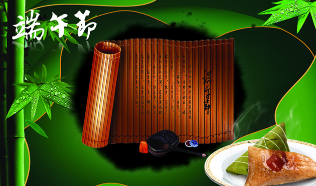

端午节为什么要叫端午节？它还有哪些其他的名字？端午节究竟从何而来？最初的端午节究竟是什么样子？端午节和我们崇尚的龙文化有着怎样的渊源？
端午节的名称在我国所有传统节日中叫法最多，达二十多个，堪称节日别名之最。如有端午节、端五节、端阳节、重五节、重午节、天中节、夏节、五月节、菖节、蒲节、龙舟节、浴兰节、粽子节 、午日节、女儿节、地腊节等等
粽子传说是为祭奠投江的屈原而传承下来的，是中国历史上文化积淀最深厚的传统食品。屈原到了江边，披散头发，在水泽边一面走，一面吟咏着。脸色憔悴，身体干瘦。渔夫看见他，便问道：“您不是三闾大夫吗？......
赛龙舟是中国端午节的习俗之一，也是端午节最重要的节日民俗活动之一，在中国南方地区普遍存在，在北方靠近河湖的城市也有赛龙舟习俗，而大部分是划旱龙舟舞龙船的形式。关于赛龙舟的起源，有多种说法......
端午节是一个富有中国特色的岁时节日，也是一个有着大爱内涵的节日，其重要性仅次于春节，与清明、中秋并列。端午节的来源版本多样，说法甚多，诸如：纪念屈原说；纪念伍子胥说；纪念曹娥说；起于三代夏至.......
插罢艾草话沧桑，九歌犹在耳边唱。
秭归崖下水长流，不见当年楚怀王。
屈子若在应慰藉，后世未敢断九章。
茫茫天问何处解，芙蓉国里尽辉煌。
家国憾事古来多，每到端阳忆汨罗。
沧浪浊清终逝去，人生醒醉总蹉跎。
而今离骚人犹唱，竞渡龙舟日似梭。
屈子当为诗者范，楚辞一曲万年歌。
细雨遮天客竟舟，喧嚣买卖艾蒿揉。
风筝有翅难飞起，葫芦无肢却畅游。
紫燕低旋闻细浪，鲤鱼高跃看豪楼。
端阳柳岸英灵祭，涕泪无声浪卷惆。